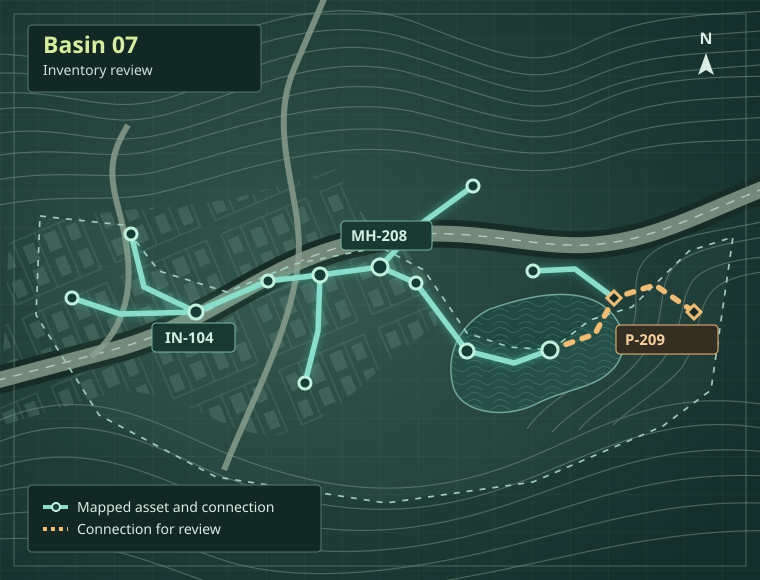

Drainage GIS inventory
Turn supplied plans, layers or tables into mapped inlets, outfalls and pipe segments with an asset-to-source crosswalk.
Stormwater GIS & field records
Bring as-builts, photos and inspection records into one traceable GIS handoff. Start with a basin, a culvert register or a piece of your closeout backlog.
Production support for engineering primes, inspection teams and public works partners.

Scope of work
We work from the records and acceptance rules your team provides. Each batch ends with files your reviewer can inspect and clear.
Turn supplied plans, layers or tables into mapped inlets, outfalls and pipe segments with an asset-to-source crosswalk.
Match photos, reports or CCTV indexes to asset IDs. Put orphan records, duplicates and conflicting references in a review queue.
Build an editable register from approved records. Keep original observations, inspection dates and unresolved fields visible.
Sample package
The handoff pairs editable layers with a map PDF, source crosswalk and exception log. Every released asset carries a source reference. Your reviewer can see where a proposed match still needs a decision.
Fictional records
| Asset | Source | Status |
|---|---|---|
| IN-104 | Plan D-02 | Matched |
| MH-208 | CCTV 017 | Matched |
| P-209 | Plan D-04 | Review |
Plan D-04 ends the pipe at the basin edge. The inspection export has no corresponding endpoint. P-209 stays flagged until the prime's reviewer confirms the downstream connection.
Pilot workflow
Choose one basin, work order or a batch of 25–50 assets. We review the source summary before confirming scope, file format and acceptance checks.
Define feature types, available records, owner schema and who approves the results.
Map the approved inputs, link source records and identify gaps in the exception log.
Your team reviews the GIS package, resolves flagged items and decides whether to scale.
Review responsibility. The prime or qualified partner owns field verification. The assigned engineer owns analysis, permitting and professional approval.
Project intake
Tell us the approximate asset count, source formats, destination system and who will review the handoff. We’ll agree on a transfer method before requesting files.